Key Metrics
The Problem
Wholesale automotive buyers are scattered across Yellow Pages, EgypYello, Dalili, buy.com.eg listings, and Facebook/Instagram/TikTok exports — each with different formats, Arabic-Indic digits, and inconsistent governorate labels.
The tool needed to unify these sources into clean per-governorate lead lists while handling phone-number sensitivity responsibly: buyer-intent records are saved without phones by design.
Architecture
Hover or tap any component to see details

Approach & Implementation
- Directory collectors: Playwright governorate collectors crawl Yellow Pages, EgypYello, Dalili, and buy.com.eg listing pages with pagination and retry handling.
- Social export parsers: dedicated Facebook, Instagram, and TikTok parsers normalize shared export files into a common lead record shape.
- Arabic-Indic phone extraction: a phone extractor normalizes Arabic-Indic and Eastern digits, then applies a WhatsApp-context filter so numbers are only kept with an explicit WhatsApp hint.
- Intent split: records are classified into buyer-intent vs. seller listings; buyer-intent rows are stored without phone numbers for compliant outreach design.
- Portable outputs: results land in SQLite plus CSV with per-governorate exports for direct wholesale follow-up workflows.
Challenges & Solutions
Challenge: Messy Arabic phone formats
Listings mix Arabic-Indic digits, spacing variants, and decorative separators, and many numbers lack any consent-adjacent context.
Solution: Normalizer + WhatsApp-hint gate
A digit normalizer unifies all variants to a canonical form, and the WhatsApp-context filter only retains numbers appearing alongside an explicit WhatsApp hint.
Challenge: Source-format drift
Each directory and social export uses different columns, labels, and governorate spellings.
Solution: Per-source parsers, one schema
Each source gets its own collector/parser module mapping into a single lead schema, so new layouts only touch one isolated parser.
Outcome
The tool produces unified SQLite + CSV lead lists with per-governorate exports, combining directory crawls and social export files in one workflow.
Its compliant-by-design phone handling keeps buyer-intent records phone-free while preserving seller-contact utility where a WhatsApp hint exists.